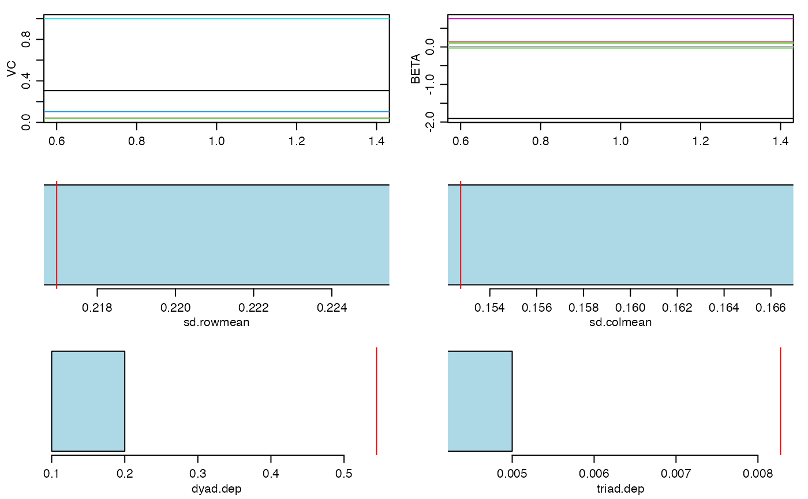
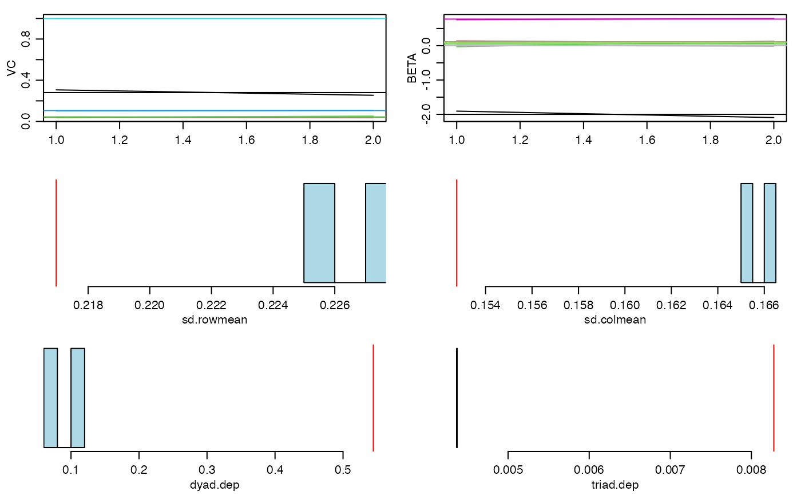
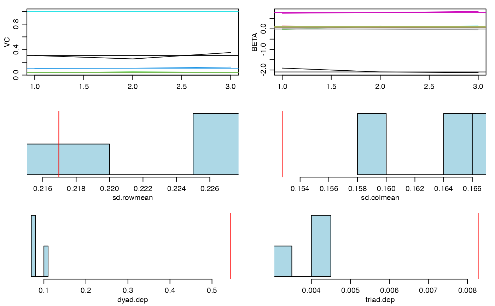
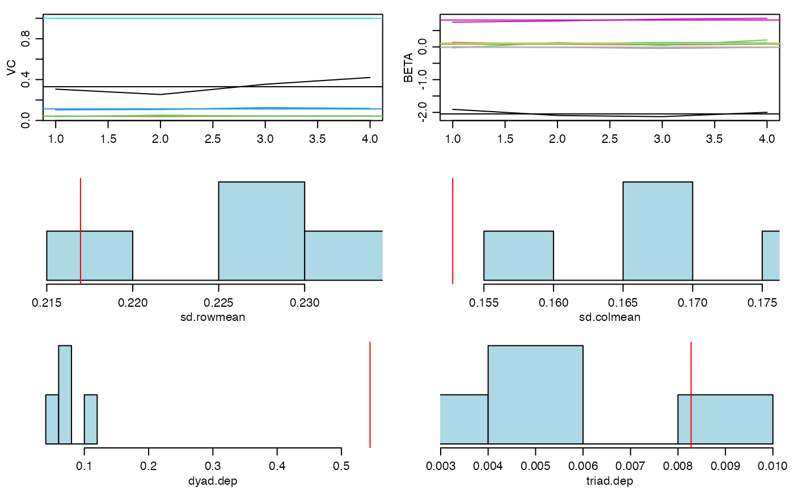
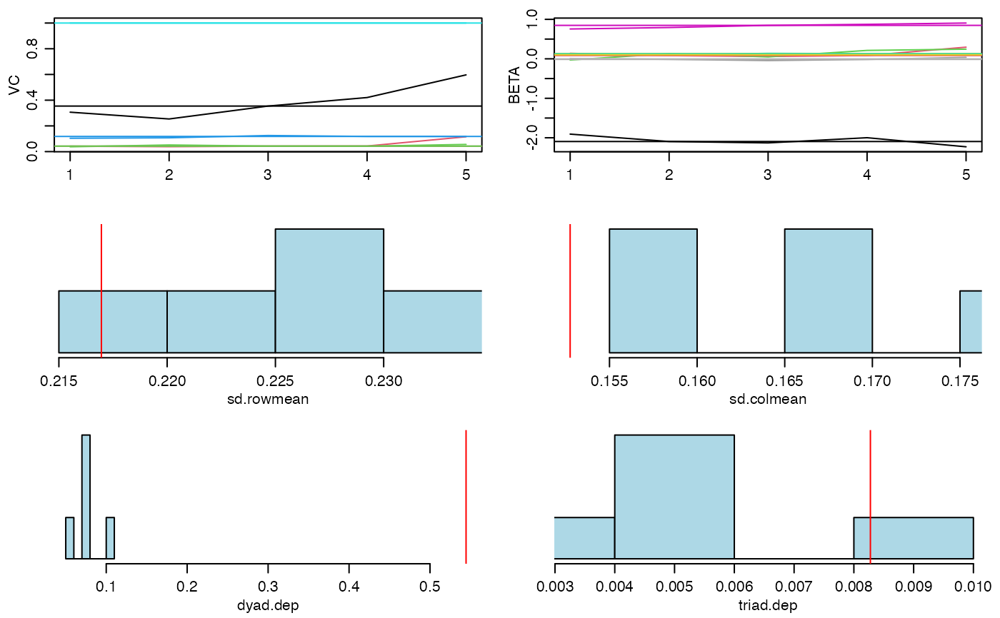

R/amen-package.R
lame-package.RdAn extension of the 'amen' package specifically designed for longitudinal network analysis. This package provides tools for fitting Additive and Multiplicative Effects (AME) models to longitudinal/replicated relational data with several key enhancements: (1) robust handling of changing actor compositions across time periods, allowing for networks with different sets of actors at each time point; (2) significant performance improvements through C++ implementations via Rcpp and RcppArmadillo; (3) specialized functions for temporal network dynamics. The package supports various data types including binary/network data (bin), normal relational data (nrm), ordinal relational data (ord), censored binary data (cbin), fixed-rank nomination schemes (frn), and row-ranked data (rrl). Based on the AME framework originally developed by Hoff (2009) and Hoff, Fosdick, Volfovsky and Stovel (2013).
| Package: | lame |
| Type: | Package |
| Version: | 0.0.0.9000 |
| Date: | 2025 |
| License: | MIT |
data(YX_frn)
fit<-ame(YX_frn$Y,YX_frn$X,burn=5,nscan=5,odens=1,family="frn")
#> Warning: data length [5] is not a sub-multiple or multiple of the number of columns [4]
#> 20 pct burnin complete
#> 40 pct burnin complete
#> 60 pct burnin complete
#> 80 pct burnin complete
#> 100 pct burnin complete
#> Warning: number of columns of result is not a multiple of vector length (arg 2)
#> 6 -1.91 0.14 -0.03 0.12 0.1 0.76 0.11 0.01 : 0.31 0.04 0.04 0.1 1

#> Warning: number of columns of result is not a multiple of vector length (arg 2)
#> 7 -2 0.11 0.05 0.11 0.1 0.77 0.1 0 : 0.28 0.04 0.04 0.11 1

#> Warning: number of columns of result is not a multiple of vector length (arg 2)
#> 8 -2.04 0.09 0.05 0.11 0.11 0.8 0.1 -0.02 : 0.3 0.04 0.04 0.11 1

#> Warning: number of columns of result is not a multiple of vector length (arg 2)
#> 9 -2.03 0.09 0.09 0.11 0.11 0.82 0.1 -0.02 : 0.33 0.04 0.04 0.11 1
#> 4 4 4 15 4 4 4 4

#> Warning: number of columns of result is not a multiple of vector length (arg 2)
#> 10 -2.07 0.13 0.12 0.11 0.12 0.84 0.1 -0.01 : 0.39 0.06 0.05 0.11 1
#> 5 5 5 22 5 5 5 5

summary(fit)
#>
#> Call:
#> NULL
#>
#> Regression coefficients:
#> Estimate StdError z_value p_value CI_lower CI_upper
#> intercept.dyad -2.072 0.123 -16.79 0 -2.314 -1.83 ***
#> rgpa.dyad 0.132 0.096 1.38 0.168 -0.055 0.319
#> rsmoke.dyad 0.122 0.114 1.073 0.283 -0.101 0.345
#> cgpa.dyad 0.109 0.011 10.087 0 0.087 0.13 ***
#> csmoke.dyad 0.115 0.019 5.954 0 0.077 0.153 ***
#> igrade.dyad 0.835 0.061 13.729 0 0.716 0.955 ***
#> igpa.dyad 0.102 0.004 23.168 0 0.094 0.111 ***
#> ismoke.dyad -0.006 0.03 -0.192 0.848 -0.064 0.052
#> ---
#> Signif. codes: 0 '***' 0.001 '**' 0.01 '*' 0.05 '.' 0.1 ' ' 1
#>
#> Variance components:
#> Estimate StdError
#> va 0.386 0.133
#> cab 0.056 0.033
#> vb 0.046 0.008
#> rho 0.115 0.009
#> ve 1.000 0.000